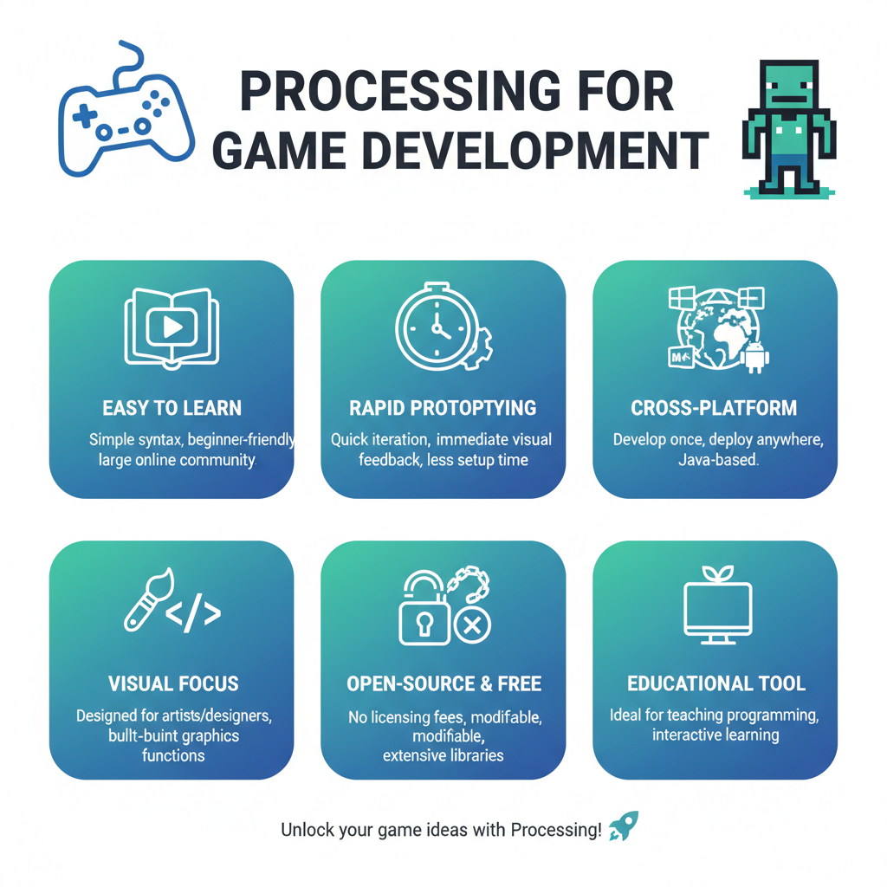
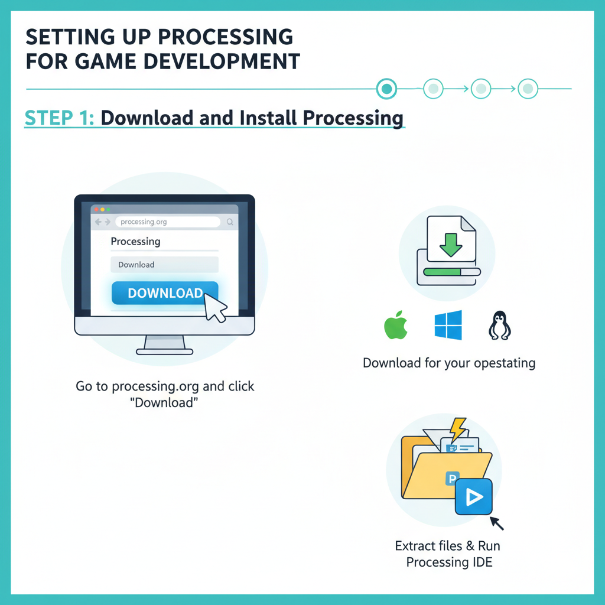
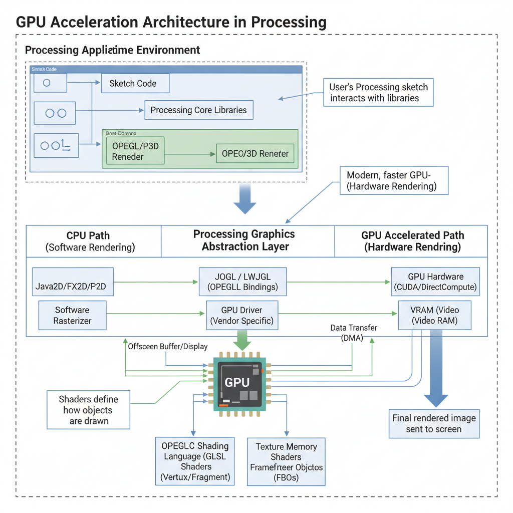

Game Development in GPU Using Processing
What is Processing and its Benefits for Game Development

A diagram highlighting the benefits of using Processing for game development, including ease of use and flexibility.
Processing is an open-source framework that enables developers to create interactive applications, including games, using standard Java syntax. At its core, Processing focuses on hardware-accelerated graphics, providing a seamless integration with Graphics Processing Units (GPUs). This allows developers to take advantage of the massive computational power available in modern GPUs.
One of the key benefits of Processing is its high-level API for GPU programming. By abstracting away many low-level details, developers can focus on creating game logic and visual elements without worrying about the underlying GPU implementation. This results in faster development times and a more efficient use of resources.
Using Processing for game development offers several advantages. Firstly, it provides access to the power of GPUs, which can significantly improve performance compared to traditional CPU-based approaches. Secondly, Processing's ease of use makes it an attractive option for developers who want to create games without extensive knowledge of low-level graphics programming. By leveraging the Processing framework, developers can focus on creating engaging game experiences while still benefiting from the computational might of modern GPUs.
For instance, NVIDIA's case studies and success stories showcase how Processing has been used in various game development projects, resulting in improved performance and efficiency.
Setting up Processing for Game Development

A flowchart showing the steps involved in setting up Processing for game development.
To get started with game development in Processing, you'll need to ensure your hardware and software configurations are set up correctly. Here's a step-by-step guide to help you through the process:
Hardware and Software Configurations
- GPU: A dedicated graphics processing unit (GPU) is required for smooth gameplay. The NVIDIA GeForce series is a popular choice among game developers.
- CPU: A fast central processing unit (CPU) ensures efficient rendering and reduces lag. Intel Core i5 or AMD Ryzen 5 processors are suitable options.
- RAM: At least 8 GB of RAM is recommended to handle demanding games and minimize lag.
- Operating System: Use a 64-bit operating system, such as Windows 10 or macOS High Sierra.
Installing and Setting Up the Processing IDE
- Download the Processing IDE: Visit the official Processing website and download the latest version of the IDE for your operating system.
-
Install the NVIDIA Driver: Install the latest NVIDIA driver to ensure optimal performance with your GPU.
(NVIDIA Case Studies and Success Stories)
3. Configure the Processing Environment:
* Set the Processing Development Environment to use the latest version of Java.
* Configure the Java Heap Size to optimize performance.
Optimizing the Processing Environment for Performance
- Use the Optimize and Profile Tools: The Processing IDE includes tools that help you identify performance bottlenecks in your code. Use these tools to optimize your game's performance.
- Utilize Multi-Threading: Take advantage of multi-threading capabilities in Processing to improve frame rates and reduce lag.
By following these steps, you'll be well on your way to setting up a powerful Processing environment for your game development projects.
Creating a Simple Game with Processing
To get started with creating a game in Processing, we'll focus on the basics. We'll create a simple game that demonstrates basic gameplay mechanics.
Rendering with Processing's Built-in Graphics Functions
Processing provides an easy-to-use graphics API for rendering 2D and 3D graphics. For our example, we'll use the beginShape() and endShape() functions to render shapes on the screen.
void setup() {
size(800, 600);
noStroke();
}
void draw() {
background(0);
// Draw a red square
fill(255, 0, 0);
beginShape();
vertex(100, 100);
vertex(200, 200);
vertex(300, 100);
endShape(CLOSE);
}
In this example, we create a window with the size() function and set the background color to black. We then use the fill() function to set the color of the shapes and the beginShape() and endShape() functions to render a red square.
Handling User Input and Updating Game State
To make our game interactive, we need to handle user input and update the game state accordingly. For example, let's add a basic collision detection for the square.
void draw() {
background(0);
// Draw a red square
fill(255, 0, 0);
beginShape();
vertex(100, 100);
vertex(200, 200);
vertex(300, 100);
endShape(CLOSE);
// Check for collision with the mouse
if (mouseX > 100 && mouseX < 200 && mouseY > 100 && mouseY < 200) {
fill(0, 255, 0); // Change color to green on collision
}
}
In this updated example, we check if the mouse is within the bounds of the square and change its color to green when a collision is detected.
Putting it All Together
Here's the complete code for our simple game:
void setup() {
size(800, 600);
noStroke();
}
void draw() {
background(0);
// Draw a red square
fill(255, 0, 0);
beginShape();
vertex(100, 100);
vertex(200, 200);
vertex(300, 100);
endShape(CLOSE);
// Check for collision with the mouse
if (mouseX > 100 && mouseX < 200 && mouseY > 100 && mouseY < 200) {
fill(0, 255, 0); // Change color to green on collision
}
}
This code demonstrates basic gameplay mechanics and shows how to use Processing's built-in graphics functions for rendering. We'll explore more advanced techniques in future tutorials.
Source, where you can learn more about NVIDIA's approach to game development and GPU acceleration.
Optimizing Game Performance with GPU Acceleration

A diagram showing the architecture of GPU acceleration for game performance optimization.
As a game developer, optimizing your game's performance is crucial for delivering an exceptional player experience. One effective way to achieve this is by leveraging the power of Graphics Processing Units (GPUs) in your game development workflow.
Identifying Bottlenecks in Game Performance
To optimize your game's performance using GPU acceleration, it's essential to identify bottlenecks that hinder the overall frame rate and responsiveness. Some common areas to focus on include:
- GPU utilization: Monitor how much of the GPU's processing power is being utilized by your game. If a particular component or feature is consistently consuming excessive resources, it may be causing performance issues.
- Memory bandwidth: Insufficient memory bandwidth can lead to slower loading times and reduced frame rates. Ensuring that your game's memory usage is optimized for the available bandwidth is vital.
- Physics simulations: Physics engines can significantly impact a game's performance, especially if they are computationally intensive. Optimizing physics simulations or using GPU-accelerated alternatives can help reduce bottlenecks.
Proper Vertex Buffer Object (VBO) Management
Proper management of vertex buffer objects (VBOs) is crucial for efficient rendering and minimizing memory usage. Here are some tips to keep in mind:
- Buffer size: Ensure that your VBOs are large enough to accommodate the required data, but not so large that they consume excessive memory.
- Buffer updates: Regularly update your VBOs with fresh data to prevent unnecessary re-drawing of objects on screen. This can help reduce the number of draw calls and improve overall performance.
Optimizing Shader Code for Better Performance
Shader code plays a significant role in determining a game's performance. Here are some tips for optimizing shader code:
- Reduce vertex count: Minimizing the number of vertices being processed by shaders can lead to improved performance.
- Use instancing: Instancing allows you to render multiple objects using a single draw call, reducing overhead and improving efficiency.
By following these guidelines, game developers can effectively optimize their games for better performance using GPU acceleration in Processing.
Edge Cases and Failure Modes in GPU-Based Game Development
When developing games on GPUs using Processing, it's essential to be aware of potential edge cases and failure modes that can occur. These scenarios can often be avoided or mitigated with proper planning, debugging techniques, and error handling.
-
GPU Memory Allocation Failures: When working with large amounts of data in GPU memory, allocation failures can occur due to insufficient memory availability or incompatible data types. To handle such failures, ensure that you:
- Monitor available GPU memory using Processing's built-in functions (e.g.,
mapandgetCapacity) to avoid running out of space. - Use efficient data structures and algorithms to minimize memory usage.
- Implement fallback strategies for critical operations, such as rendering graphics.
- Monitor available GPU memory using Processing's built-in functions (e.g.,
-
Proper Error Handling for Graphics Rendering Errors: Incorrectly handling graphics rendering errors can lead to game crashes or unexpected behavior. To ensure proper error handling:
- Implement try-catch blocks around graphics-related code to catch and handle exceptions.
- Use Processing's built-in error checking functions (e.g.,
isError) to detect potential issues before they occur. - Provide meaningful error messages to help diagnose problems.
-
Debugging GPU-Related Issues in Processing: Debugging GPU-related issues can be challenging due to the complex nature of modern GPUs. To overcome this, follow these tips:
- Use debugging tools like NVIDIA's Visual Profiler or Processing's built-in debuggers to analyze performance and identify bottlenecks.
- Leverage online resources, such as NVIDIA Case Studies and Success Stories (https://www.nvidia.com/en-us/case-studies/), to learn from industry experts and best practices.
By understanding these edge cases and failure modes, developers can create more robust and reliable GPU-based games in Processing.
Security and Privacy Considerations in GPU-Based Game Development
When developing games on GPUs using Processing, security and privacy considerations are crucial to ensure a safe and enjoyable experience for users. In this section, we'll discuss the importance of protecting sensitive user data from unauthorized access, proper input validation for secure gameplay, and ensuring compliance with relevant regulations and standards.
Protecting Sensitive User Data
To protect sensitive user data from unauthorized access, developers can implement several measures:
- Use encryption: Encrypting data both in transit and at rest can prevent unauthorized parties from accessing it. Processing provides a built-in
Securelibrary that can be used for encryption. - Implement access controls: Limit access to sensitive data by using secure authentication and authorization mechanisms, such as OAuth or JWT tokens.
- Regularly update dependencies: Keeping dependencies up-to-date can help prevent vulnerabilities that could be exploited for malicious purposes.
Proper Input Validation
Proper input validation is essential to prevent attacks like SQL injection, cross-site scripting (XSS), and buffer overflow attacks. Here are some tips:
- Validate user input: Always validate user input to ensure it conforms to expected formats.
- Use prepared statements: Prepared statements can help prevent SQL injection attacks by separating the SQL code from the data.
- Implement rate limiting and IP blocking: Limiting the number of requests from a single IP address can help prevent brute-force attacks.
Compliance with Regulations and Standards
Developers must ensure their games comply with relevant regulations and standards, such as GDPR, CCPA, and PCI-DSS. Here are some tips:
- Conduct regular security audits: Regular security audits can help identify vulnerabilities and ensure compliance.
- Implement data retention policies: Establishing clear data retention policies can help ensure compliance with regulations.
By following these security and privacy considerations, developers can create a safe and enjoyable experience for users while ensuring compliance with relevant regulations and standards.